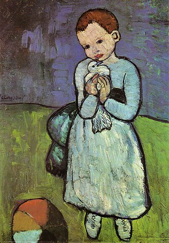

Çocuk Terapisinde Psikanalitik Yaklaşım
Bir çocuk bazen öfkesini bağırarak, bazen sessizliğe çekilerek, bazen de oyununda tekrar tekrar kurduğu sahnelerle dile getirir. Çoğu zaman bu ifadeler anne baba için yalnızca bir “problem” gibi görünür. Oysa psikanalitik bakışta bunların her biri, çocuğun ruhsal dünyasından gelen bir mesajdır. Çocuk sözcükler yerine bedeni, davranışı ve oyunu ile konuşur. Alt ıslatma, tırnak yeme, öfke patlamaları, uykuya dalma güçlüğü, parmak emme, tikler, dikkat dağınıklığı ya da okul reddi… Tüm bu semptomlar yüzeyde bir sorun gibi görünse de aslında çocuğun iç dünyasında olup bitene işaret eder. Winnicott’un da söylediği gibi, bazen “davranış bozukluğu” dediğimiz şeyler çocuğun ruhsallığının canlı olduğunun göstergesidir; yani bir yardım çağrısıdır.
Yetişkinler seans odasında sözcüklerle anlatır; çocuklar ise oyunla. Küçük bir kukla, bir resim, hamurla yapılan şekiller ya da birkaç hayvan figürü… Bunların hepsi çocuğun iç dünyasına açılan kapılardır. Melanie Klein, oyunun çocuğun bilinçdışının dili olduğunu söyler. Çocuk oyununda korkularını, kıskançlıklarını, kayıplarını, arzularını yeniden sahneler. Bazen aynı oyunu defalarca kurar; bu tekrar bir inat ya da vakit kaybı değildir, aksine ruhsal sürecin bir parçasıdır. Terapist, bu oyuna tanıklık eder, duyduklarını anlamlandırmaya çalışır ve çocuğun yanında sabırla eşlik eder.
Bir yetişkin kendi isteğiyle terapiye gelir, ama çocuk için süreç farklı işler. Çocuğu terapiye getiren çoğunlukla anne babadır. Çocuğun talebi onun ağlamasında, öfkesinde, sessizliğinde ya da altını ıslatmasında saklıdır. Bu nedenle psikanalitik çocuk terapisi, hem çocukla hem de anne babayla birlikte yürütülen hassas bir süreçtir.
Çocuğun ruhsal dünyası, anne babasıyla kurduğu bağdan bağımsız düşünülemez. Bu nedenle süreçte anne babayla düzenli görüşmeler yapılır. Çocuğun seanslardaki deneyimleri, evdeki gözlemlerle birlikte ele alınır. Amaç, aile ilişkisini daha güvenli ve besleyici bir hale getirmektir. Winnicott’un dediği gibi, “ebeveynin yeterince iyi olması”, çocuğun ruhsal gelişiminde en önemli kaynaktır.
Psikanalitik yaklaşımla yapılan çocuk terapilerinde, semptom bastırılmaya çalışılmaz. Semptom, çocuğun içine gömülen duyguların ve çatışmaların görünür olmasına yardımcı olur. Çocuğun kendi iç dünyasını tanıyıp duygularıyla daha sağlıklı yollarla baş edebilmesine alan açar. Bir oyunda sergilenen küçük bir sahne, örneğin annesini sürekli uzaklaştıran bir bebek figürü, çocuğun özlemleri, korkuları ve kırgınlıkları hakkında çok şey anlatabilir. Terapist bu sahnelere kulak verir, anlamını birlikte bulmaya çalışır ve çocuğun ruhsal yolculuğuna eşlik eder.
Çocuklarla psikanalitik çalışma yalnızca bir tedavi yöntemi değil, aynı zamanda çocuğun iç dünyasına saygıyla yaklaşan bir yolculuktur. Klein’ın oyun üzerine söyledikleri, Winnicott’un çocuğun spontane varoluşuna dair vurguları ve Anna Freud’un çocukla çalışmanın farklılığına ilişkin görüşleri bu yaklaşımın temel taşlarını oluşturur. Davranış, oyun ya da sessizlik bir sorun değil, bir habercidir. Psikanalitik çocuk terapisinde amaç semptomu ortadan kaldırmak değil; semptomun ardındaki duyguyu ve çatışmayı anlamaktır. Çocuğun duygu regülasyonu yapabilmesi, öfkesini işlemleyebilmesi ve aile bağlarının daha güvenli hale gelmesiyle birlikte, semptoma duyulan ihtiyaç da azalır.
Terapide en önemli unsurlardan biri çerçevedir. Çerçeve, terapinin güvenliğini ve sürekliliğini sağlayan görünmez bir alan gibidir. Çocuğun her hafta aynı gün ve saatte terapiye gelmesi, terapistin o zamanı yalnızca ona ayırması, seansların ritmini oluşturur. Bu düzen, çocuğun ruhunda güvenli bir yapı kurar. Bazen bir seans iptal olabilir ya da çocuk o gün gelmek istemeyebilir. Bu durum terapinin kesildiği anlamına gelmez. Psikanalitik bakışta iptallerin ve aksamaların da ruhsal bir anlamı vardır. Terapist bu yokluğun, ertelemenin ya da gelmemenin ne söylediğini düşünür, sürecin bir parçası olarak çalışır. Terapi, görünürde kesintiye uğrasa da ruhsallık ve terapötik ilişki devam eder. İptal edilmiş görünen seansın zaman diliminde terapistin zihninde çocuk ve ailesi düşünülmeye devam eder.
Tüm Yazılara Geri Dön